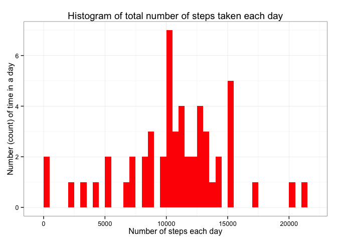
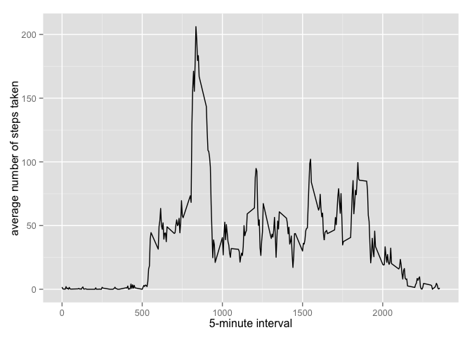
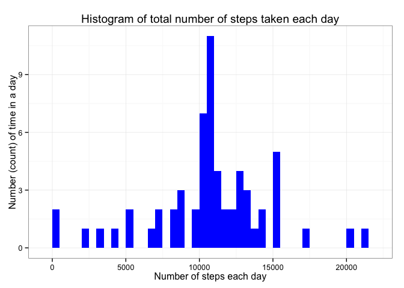
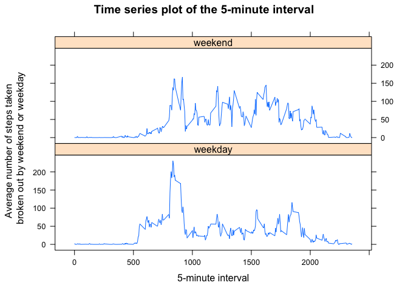

library(knitr)
library(ggplot2)
library(plyr)
library(data.table)
library(lattice)opts_chunk$set(echo = TRUE)Download the data from here, unzip necessary file into your working directory.
if(!file.exists('activity.csv')){
unzip('activity.zip')
}
data <- read.csv("activity.csv", header=TRUE, sep=',')Preprocessing Review data and format - convert date format using lubridate
str(data)## 'data.frame': 17568 obs. of 3 variables:
## $ steps : int NA NA NA NA NA NA NA NA NA NA ...
## $ date : Factor w/ 61 levels "2012-10-01","2012-10-02",..: 1 1 1 1 1 1 1 1 1 1 ...
## $ interval: int 0 5 10 15 20 25 30 35 40 45 ...head(data)## steps date interval
## 1 NA 2012-10-01 0
## 2 NA 2012-10-01 5
## 3 NA 2012-10-01 10
## 4 NA 2012-10-01 15
## 5 NA 2012-10-01 20
## 6 NA 2012-10-01 25totalsteps <- aggregate(steps ~ date, data, sum)ggplot(totalsteps, aes(x = steps)) +
geom_histogram(fill = "red", binwidth = 500) +
labs(title="Histogram of total number of steps taken each day",
x = "Number of steps each day", y = "Number (count) of time in a day") + theme_bw()
stepsperdayMean <- mean(totalsteps$steps, na.rm=TRUE)
stepsperdayMedian <- median(totalsteps$steps, na.rm=TRUE)The mean is 1.076618910^{4} and the median is 10765.
Make a time series plot (i.e. type = “l”) of the 5-minute interval (x-axis) and the average number of steps taken, averaged across all days (y-axis)
averages <- aggregate(x=list(steps=data$steps), by=list(interval=data$interval),
FUN=mean, na.rm=TRUE)
ggplot(data=averages, aes(x=interval, y=steps)) +
geom_line() +
xlab("5-minute interval") +
ylab("average number of steps taken")
Which 5-minute interval, on average across all the days in the dataset, contains the maximum number of steps?
maxsteps <- averages[which.max(averages$steps),]The max interval and steps result 835, 206.1698113. The most active 5-minute interval is between 8:35 a.m. and 8:40 a.m. with an average of about 206 steps.
Calculate and report the total number of missing values in the dataset
missingvalues <- sum(is.na(data$steps))The total missing number of values in the data set is 2304.
Devise a strategy for filling in all of the missing values in the dataset. The strategy does not need to be sophisticated. For example, you could use the mean/median for that day, or the mean for that 5-minute interval, etc.
Strategy: create a new dataset using the mean values of its 5-minute interval and verify that there are no missing values.
nomissingdata <- function(data, pervalue) {
naset <- which(is.na(data$steps))
nafill <- unlist(lapply(naset, FUN=function(idx){
interval = data[idx,]$interval
pervalue[pervalue$interval == interval,]$steps
}))
stepsfill <- data$steps
stepsfill[naset] <- nafill
stepsfill
}
nonasdata <-data.frame(
steps = nomissingdata(data, averages),
date = data$date,
interval = data$interval)
str(nonasdata)## 'data.frame': 17568 obs. of 3 variables:
## $ steps : num 1.717 0.3396 0.1321 0.1509 0.0755 ...
## $ date : Factor w/ 61 levels "2012-10-01","2012-10-02",..: 1 1 1 1 1 1 1 1 1 1 ...
## $ interval: int 0 5 10 15 20 25 30 35 40 45 ...anynas <- sum(is.na(nonasdata))The number of missing data in the new data set is 0.
totalnonassteps <- aggregate(steps ~ date, nonasdata, sum)
ggplot(totalnonassteps, aes(x = steps)) +
geom_histogram(fill = "blue", binwidth = 500) +
labs(title="Histogram of total number of steps taken each day",
x = "Number of steps each day", y = "Number (count) of time in a day") + theme_bw()
Calculate and report the mean and median total number of steps taken per day
totalnonassteps <- tapply(nonasdata$steps, nonasdata$date, FUN=sum)
stepsnonasMean <- mean(totalnonassteps)
stepsnonasMedian <- median(totalnonassteps)The mean with no NA values is 1.076618910^{4} and the median is 1.076618910^{4}.
What is the impact of imputing missing data on the estimates of the total daily number of steps?
There is a minimial difference between this new result and the previous result, there was a variation between the mean and median previously: The prior mean is 1.076618910^{4} and the median is 10765.
Create a new factor variable in the dataset with two levels – “weekday” and “weekend” indicating whether a given date is a weekday or weekend day.
dataweekday <- nonasdata
weekend <- weekdays(as.Date(dataweekday$date)) %in% c("Saturday", "Sunday")
dataweekday$daytype <- "weekday"
dataweekday$daytype[weekend == TRUE] <- "weekend"
dataweekday$daytype <-as.factor(dataweekday$daytype)
str(dataweekday)## 'data.frame': 17568 obs. of 4 variables:
## $ steps : num 1.717 0.3396 0.1321 0.1509 0.0755 ...
## $ date : Factor w/ 61 levels "2012-10-01","2012-10-02",..: 1 1 1 1 1 1 1 1 1 1 ...
## $ interval: int 0 5 10 15 20 25 30 35 40 45 ...
## $ daytype : Factor w/ 2 levels "weekday","weekend": 1 1 1 1 1 1 1 1 1 1 ...head(dataweekday)## steps date interval daytype
## 1 1.7169811 2012-10-01 0 weekday
## 2 0.3396226 2012-10-01 5 weekday
## 3 0.1320755 2012-10-01 10 weekday
## 4 0.1509434 2012-10-01 15 weekday
## 5 0.0754717 2012-10-01 20 weekday
## 6 2.0943396 2012-10-01 25 weekdayweekdayinterval <- aggregate(steps ~ interval + daytype, dataweekday, mean)
names(weekdayinterval)[3] <- "stepsmean"
xyplot (stepsmean ~ interval | daytype,
weekdayinterval,
type = "l",
layout = c(1,2),
main = "Time series plot of the 5-minute interval",
xlab = "5-minute interval",
ylab = "Average number of steps taken \n broken out by weekend or weekday")
Yes, there is a difference in activity patterns between weekend and weekdays. The weekend does not peak as high, nor does the activity start as early in the day, but has a higher activity average throughout the intervals.